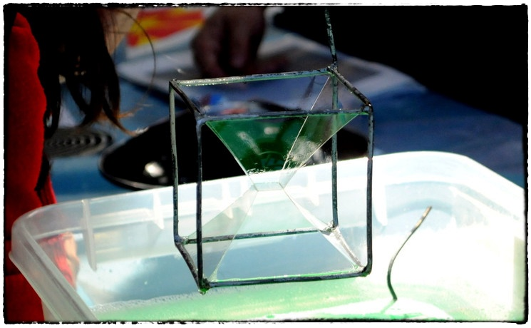

You are herescienza
scienza
Continua Mare di scienza: un'estate tra arte, scienza e movimento
Continua Mare di scienza, il ciclo di attività ludico-scientifiche, ludico-artistiche e motorie che l'associazione PALERMOSCIENZA, in collaborazione quest'anno con l'Ecomuseo Mare Memoria Viva e l'associazione diARIA, propone durante il periodo estivo.
Le attività, ideate per i bambini dai 5 ai 10 anni, saranno numerose e differenziate, incentrate su diverse discipline quali matematica, fisica, chimica, geologia, biologia, astronomia, archeologia e saranno autoconsistenti: in questo modo i partecipanti potranno inserirsi in qualsiasi momento e scoprire ogni giorno il mondo attraverso differenti chiavi di lettura.
Le attività si svolgeranno dal 28 agosto all'8 settembre, dal lunedì al venerdì, dalle 8:15 alle 14:30, per il turno mattutino; dal martedì al venerdì, dalle 15:00 alle 18:00, per il turno pomeridiano, presso l'Ecomuseo urbano (ex deposito locomotive Sant'Erasmo), in via Messina Marine 20, a Palermo.
Il costo a partecipante è di € 60 a settimana, per il turno mattutino e di € 35 a settimana, per il turno pomeridiano. Per informazioni più dettagliate visionare la locandina.
Le attività saranno attivate al raggiungimento di un numero minimo di partecipanti.
Per informazioni e iscrizioni: Mare memoria viva, cell.: 3283394167, e-mail: info@marememoriaviva.it, oppure segreteria@palermoscienza.it.
Vi aspettiamo
Mare di scienza: un'estate tra arte, scienza e movimento
 Riparte a grande richiesta Mare di scienza, un ciclo di attività ludico-scientifiche, ludico-artistiche e motorie che l'Associazione PALERMOSCIENZA, in collaborazione quest'anno con l'Ecomuseo Mare Memoria Viva e l'associazione diARIA, propone durante il periodo estivo.
Riparte a grande richiesta Mare di scienza, un ciclo di attività ludico-scientifiche, ludico-artistiche e motorie che l'Associazione PALERMOSCIENZA, in collaborazione quest'anno con l'Ecomuseo Mare Memoria Viva e l'associazione diARIA, propone durante il periodo estivo.
Le attività, ideate per i bambini dai 6 ai 10 anni, saranno numerose e differenziate. Esse si svolgeranno dal 12 giugno al 14 luglio, dalle 09:00 alle 13:00, e saranno autoconsistenti: in questo modo i partecipanti potranno inserirsi in qualsiasi momento e ogni giorno potranno scoprire il mondo attraverso attvità stimolanti.
Le attività si terranno, dal martedì al venerdì, in via Messina Marine presso l'Ecomuseo urbano (ex deposito locomotive Sant'Erasmo), mentre il lunedì sarà dedicato a visite ed escursioni per conoscere o rivivere spazi sempre diversi e suggestivi della nostra città.
Sotto la locandina per visionare il calendario e gli orari.
Il costo a partecipante è di € 60 a settimana.
Le attività saranno attivate al raggiungimento di un numero minimo di partecipanti.
Per informazioni e iscrizioni
Mare memoria viva: cell.: 3283394167, e-mail: info@marememoriaviva.it oppure segreteria@palermoscienza.it

PALERMOSCIENZA partecipa alla European Researchers’ Night 2013
Venerdì 27 settembre avrà luogo la European Researchers’ Night, evento che da anni coinvolge i ricercatori e le istituzioni di ricerca di tutti i paesi europei con lo scopo di far conoscere ai cittadini le diverse attività di ricerca e l’importanza dei risultati ottenuti.
L’evento che coinvolge la nostra città è stato organizzato dall’INAF – Osservatorio Astronomico di Palermo, insieme a Urania, al Piano Lauree Scientifiche, al Dipartimento di Robotica dell'Università di Palermo, al Sistema Museale d'Ateneo e all'Associazione PALERMOSCIENZA (http://www.astropa.unipa.it/EuresNight2013.html).
Dalle 20.00 alle 24.00, presso il Planetario di Villa Filippina (Piazza S. Francesco di Paola n.18), in uno scenario ricco di iniziative di diverso carattere – spettacoli sotto la cupola del Planetario, mostre, osservazioni ai telescopi, concerto rock, ecc., - l’associazione PALERMOSCIENZA proporrà laboratori incentrati sulla cromatografia, sulle ombre colorate, sulle illusioni ottiche e altro ancora.
Vi aspettiamo numerosi!

Al via i primi appuntamenti di PALERMOSCIENZA
Sul finire dell'estate cittadina si aprirà la Settimana delle Culture, ideata, promossa e organizzata dal Comitato "Insieme per Palermo" con la collaborazione dell’Assessorato alla Cultura del Comune di Palermo e la partecipazione di partner pubblici e privati, a supporto della candidatura di Palermo a Capitale Europea della Cultura 2019.
Gli appuntamenti in programma sono numerosi e di differente natura: dal 16 al 22 settembre, diverse zone cittadine - tra le quali i Cantieri Culturali alla Zisa in veste di “cittadella della cultura” - ospiteranno attività incentrate su fotografia, danza, teatro, musica, visite guidate e molto altro ancora, per riscoprire il carattere multietnico e multiculturale della città.
All'interno della Settimana delle Culture è inserita l'iniziativa "7 Scuole X 7 Musei" che coinvolge alcuni dei musei degli Istituti scolastici della città di Palermo.
Per l’occasione, l'associazione PALERMOSCIENZA e l’Istituto Comprensivo Statale Cruillas apriranno al pubblico il Centro per la Scienza, che ospita la mostra permanente di exhibit scientifici costruiti dall’associazione PALERMOSCIENZA, dagli Istituti IC Padre Pino Puglisi, il liceo scientifico S. Cannizzaro e l’Istituto d'Arte V. Ragusa e O. Kjoara di Palermo.
Il Centro ha sede presso l’IC Cruillas (via Salerno 19) e sarà aperto mercoledì 18 e giovedì 19 settembre 2013 dalle ore 8.30 alle ore 12.30.
Per informazioni e prenotazioni:
segreteria associazione
3668028227 / 3334612148
dal lunedì al venerdì dalle ore 10,00 alle ore 13,00 e dalle 16,00 alle 19,00
Un Mare di Scienza al Centro per la scienza
Questa estate l'associazione PALERMOSCIENZA, con il coinvolgimento di INAF - Osservatorio Astronomico di Palermo, ripropone il progetto Un mare di scienza, ideato per far vivere ai bambini tra i 5 e i 12 anni un’estate all’insegna della scienza.
Dal 17 giugno al 12 luglio, presso il nostro Centro per la scienza, sito in via Salerno 19 presso l'IC Cruillas (mappa), animatori specializzati coinvolgeranno i bambini in laboratori giornalieri, trasformandoli in piccoli scienziati, rendendoli attori delle loro scoperte e creazioni e stimolando la loro voglia di imparare, comprendere e comunicare attraverso il gioco e la manualità. Ciascun laboratorio è auto-consistente in modo che i singoli partecipanti possano inserirsi in qualsiasi giorno trovando sempre cose interessanti da fare. Ogni mattina dunque il tempo trascorrerà alla scoperta dei pianeti e delle stelle, o andando a caccia di simmetrie, o "misurandosi" col concetto di misura o, ancora, sperimentando la scienza da vedere e da mangiare.
In allegato la brochure informativa in cui troverete maggiori dettagli.
Per informazioni e iscrizioni contattare, dal lunedì al venerdì dalle ore 10:00 alle ore 13:00 e dalle 16:00 alle 19:00, la segreteria dell'associazione ai numeri 3668028227 / 3334612148 o per email segreteria@palermoscienza.it.
Centro per la scienza: un'anticipazione di domani
Domani festeggeremo la nascita del primo Centro per la Scienza di Palermo. Nel video qui sotto un'anticipazione di ciò che vedrete.
Si tratta di una bella e speciale Tavola Periodica creata dal Liceo Artistico di Palermo "Vincenzo Ragusa e Otama Kiyohara", che ha vinto nel 2011 il II premio al contest internazionale dell'European Chemistry and Chemical Engineering Education Network (EC2E2N).
Nasce il primo nucleo di un centro per la scienza a Palermo
 Martedì 9 aprile 2013, alle ore 10.00, presso l’Istituto Comprensivo Statale Cruillas di Palermo (via Salerno 19), l'associazione PALERMOSCIENZA e la scuola I.C. Cruillas inaugurano il primo nucleo di uncentro per la scienza a Palermo.
Martedì 9 aprile 2013, alle ore 10.00, presso l’Istituto Comprensivo Statale Cruillas di Palermo (via Salerno 19), l'associazione PALERMOSCIENZA e la scuola I.C. Cruillas inaugurano il primo nucleo di uncentro per la scienza a Palermo.
Ultimo giorno di Esperienza inSegna 2013: Mappare l'ambiente... ma la cura continua!
Una delle novità della sesta edizione di Esperienza inSegna 2013 è stata l'istituzione di un premio dedicato ai migliori exhibit ideati e costruiti dagli studenti.
Una commissione appositamente istituita e composta dal prof. Carmelo Arena, vicepresidente dell'associazione PALERMOSCIENZA, dal dott. Claudio Fazio, ricercatore presso il Dipartimento di Fisica e Chimica dell'Università di Palermo e dal prof. Maurizio Leone, presidente dell'associazione Scienza Felicissima e direttore del Dipartimento di Fisica e Chimica dell'Università di Palermo, ha effettuato la scelta dei primi tre migliori exhibit per fascia scolare (scuola primaria, scuola secondaria di primo e di secondo grado) in base alla qualità della costruzione, alla funzionalità e all'attrattiva dell'oggetto, valutando inoltre le competenze espositive dei giovani partecipanti. Nel video alcune fasi della premiazione e, a contorno, brevi visioni delle attività parallele.
Continuate a seguirci, molto presto ci sarà un'altra pillola...
Sesto giorno di Esperienza inSegna 2013, sesto giorno di cura!
La mattina della sesta giornata comincia all'insegna della musica: ritornano Mario Ferreri ed Eliana Danzì con l'orchestra della Scuola secondaria di 1° grado Vittorio Emanuele III di Palermo che propongono quest'anno la conferenza-spettacolo Mappare lo spazio... mappare la musica, e il cervello che fa?
Sempre presenti gli appuntamenti con i laboratori Fare per capire tra i quali: A spasso tra le note a cura dell'associazione PALERMOSCIENZA e dell'Accademia corale Henri Farge e Orientarsi a cura dell'associazione PALERMOSCIENZA.
E poi ancora il laboratorio Sentieri nell'ambiente a cura di EcoCampus adventure, le numerose e varie esposizioni di exhibit, gli spettacoli teatrali,, le mostre laboratoriali...
A domani! 
Esperienza inSegna 2013, siamo giunti alla terzultima pillola!
Tra i corridoi di un affollattissimo Polididattico e gli spazi esterni circostanti è trascorsa una delle più dense giornate di Esperienza inSegna 2013: Mappare l'ambiente.
Riprende il tema la conferenza interattiva Mappe volanti di Andrea Borruso, Consorzio Ticonzero, che mostra come con i droni e il telerilevamento di prossimità si possa realizzare cartografia aerea di qualità.
A metà mattinata l'interessante e utile laboratorio Dimostrazioni di disostruzione pediatrica, a cura della Croce Rossa Italiana – Comitato Provinciale di Palermo, che ha visto la partecipazione attiva e attenta del pubblico.
Vi è stata inoltre la seconda (e penultima replica) dello spettacolo teatrale Il mangiapaesaggi, a cura di Gloria Calì, con i giovanissimi attori della Scuola Secondaria di 1°grado Cosmo Guastella di Misilmeri.
A domani!